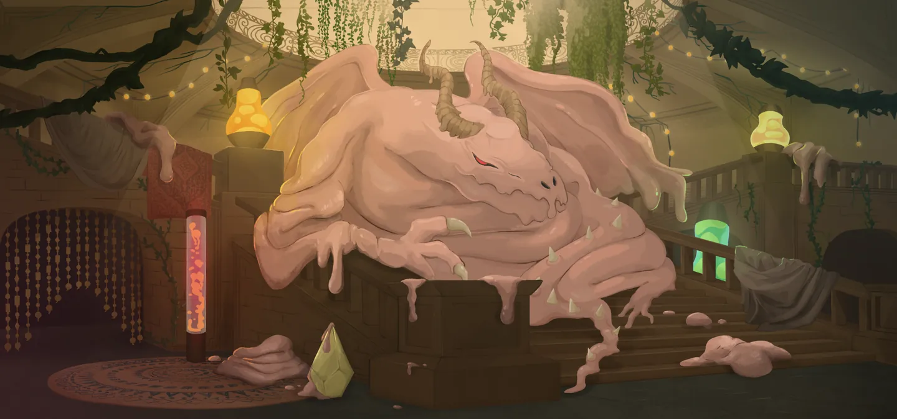

Paël — Dragon de Cire
Patch de Référence :
v0.111.0 Beta(Dernier patch officiel) Acte d'apparition : Acte 2 Déblocage (Epoch) :NoneThème Visuel / Couleur :#332C29
🎨 Portraits & Illustrations
| Icône Ancien | Illustration Principale |
|---|---|
 |
🎮 Intégration Visuelle GBA (Butano)
- Palette suggérée pour la GBA : Teinte dominante
#332C29. À mapper sur une palette 16 couleurs (15 couleurs + transparent) pour le BG de portrait. - Dimensions portrait GBA : 64x64 pixels (mode 4 bpp tilemap) positionné à
(X: 16, Y: 24)sur l'écran 240x160. - Couleur des boutons / encadrements UI :
rgba(8, 20, 0, 0.75)converti en code couleur GBA 15-bit BGR555.
📜 Rôle & Lore dans l'Ascension
🎲 Règles des Slots & Choix
- Nombre total d'options : 10 reliques disponibles.
- Structure des tirages : 3 slot(s).
- Slot #1 : 1 choix parmi 3 reliques présentées.
- Slot #2 : 1 choix parmi 4 reliques présentées.
- Slot #3 : 1 choix parmi 3 reliques présentées.
🏆 Catalogue Complet des Reliques (Classées par Tier)
⭐ Tier S (3 reliques)
 Larmes de Paël (
Larmes de Paël (PAELS_TEARS)
- Tier :
S| Rareté :Ancient - Description : Si vous terminez votre tour sans avoir dépensé toute votre ⚡, gagnez ⚡2⚡ supplémentaires au prochain tour.
- Implémentation GBA C++ : Effet Majeur Prioritaire : À implémenter en priorité dans le prototype MVP en raison de son fort impact stratégique.
 Œil de Paël (
Œil de Paël (PAELS_EYE)
- Tier :
S| Rareté :Ancient - Description : Lorsque vous terminez votre tour sans avoir joué de cartes pour la première fois dans un combat, Épuisez votre Main, et jouez un tour supplémentaire.
- Implémentation GBA C++ : Effet Majeur Prioritaire : À implémenter en priorité dans le prototype MVP en raison de son fort impact stratégique.
 Sang de Paël (
Sang de Paël (PAELS_BLOOD)
- Tier :
S| Rareté :Ancient - Description : Au début de votre tour, piochez 1 carte supplémentaire.
- Implémentation GBA C++ : Effet Majeur Prioritaire : À implémenter en priorité dans le prototype MVP en raison de son fort impact stratégique.
⭐ Tier A (2 reliques)
 Chair de Paël (
Chair de Paël (PAELS_FLESH)
- Tier :
A| Rareté :Ancient - Description : Gagnez ⚡1⚡ supplémentaire au début de votre 3ème tour et au début de chaque tour suivant.
- Implémentation GBA C++ : Effet Passif : Hook standard dans
RelicManageravec écouteur d'événement (ON_COMBAT_START,ON_TURN_START, etc.).
 Griffe de Paël (
Griffe de Paël (PAELS_CLAW)
- Tier :
A| Rareté :Ancient - Description : Envoûtez toutes vos Défenses avec Viscosité.
- Implémentation GBA C++ : Effet Passif : Hook standard dans
RelicManageravec écouteur d'événement (ON_COMBAT_START,ON_TURN_START, etc.).
⭐ Tier B (2 reliques)
 Aile de Paël (
Aile de Paël (PAELS_WING)
- Tier :
B| Rareté :Ancient - Description : Vous pouvez offrir des récompenses de carte en sacrifice à Paël. Tous les 2 sacrifices, vous obtenez une Relique.
- Implémentation GBA C++ : Effet Passif : Hook standard dans
RelicManageravec écouteur d'événement (ON_COMBAT_START,ON_TURN_START, etc.).
 Excroissance de Paël (
Excroissance de Paël (PAELS_GROWTH)
- Tier :
B| Rareté :Ancient - Description : Envoûtez une carte avec Clonage.
- Implémentation GBA C++ : Effet Passif : Hook standard dans
RelicManageravec écouteur d'événement (ON_COMBAT_START,ON_TURN_START, etc.).
⭐ Tier C (1 relique)
 Légion de Paël (
Légion de Paël (PAELS_LEGION)
- Tier :
C| Rareté :Ancient - Description : Double l'Armure reçue d'une carte, puis s'endort pendant 2 tours.
- Implémentation GBA C++ : Effet Passif : Hook standard dans
RelicManageravec écouteur d'événement (ON_COMBAT_START,ON_TURN_START, etc.).
⭐ Tier D (2 reliques)
 Corne de Paël (
Corne de Paël (PAELS_HORN)
- Tier :
D| Rareté :Ancient - Description : Ajoutez 2 Relaxations à votre Deck.
- Implémentation GBA C++ : Mécanique de Deck : Ajoute
Relaxation(RELAX) au deck du joueur lors de la sélection. Nécessite l'enregistrement de l'ID de carte dansCardPool.
Cartes Dérivées / Associées :
 Relaxation (
Relaxation (RELAX) — Compétence (Coût :3⚡)- Effet de base : Gagnez 16 d'Armure. Au prochain tour, piochez 2 cartes et gagnez ⚡2⚡. Épuisement.
- Effet amélioré : Gagnez 18 d'Armure. Au prochain tour, piochez 3 cartes et gagnez ⚡3⚡. Épuisement.
- Amélioration :
block: +2, cards: +1, energygain: +1
 Dent de Paël (
Dent de Paël (PAELS_TOOTH)
- Tier :
D| Rareté :Ancient - Description : Retirez 5 cartes de votre Deck. Après chaque combat, récupérez-en 1 aléatoirement ; elle est Améliorée.
- Implémentation GBA C++ : Effet Passif : Hook standard dans
RelicManageravec écouteur d'événement (ON_COMBAT_START,ON_TURN_START, etc.).
💬 Dialogues & Répliques
Les dialogues s'affichent dans la boîte de dialogue inférieure (240x40 px) sur la GBA avec défilement fluide au bouton A :
🗣️ Première Rencontre (Toutes runs confondues)
- 👑 Ancien :
Une marionnette est arrivée ?
Pouvez-vous aller voir si Père va bien ? Je suis trop fatigué...
🗣️ Soldat de Fer (Ironclad)
-
👑 Ancien :
Tant de rage... Croyez-moi, rechercher la paix vous fera grand bien.
-
👑 Ancien :
Vous souvenez-vous ce que cela fait de rêver ?
Il est bon de dormir... -
👑 Ancien :
Vous devez apaiser votre feu intérieur.
Père peut vous libérer...
🗣️ La Silencieuse (Silent)
-
👑 Ancien :
Créature de meurtre, nul besoin de votre violence ici.
Prenez une partie de mon corps et trouvez la paix... -
👑 Ancien :
En quête de trophées ? Bien sûr, prenez donc une partie de mon corps...
Si cela peut vous réconforter... -
👑 Ancien :
Vous m'avez empoisonné... ?
Qu'est-ce que... ? zZZzz...
🗣️ Le Défectueux (Defect)
-
👑 Ancien :
Petit automate, toujours à la recherche de votre ami...
Laissez-moi vous aider. -
👑 Ancien :
Les automates rêvent-ils ?
Observez-moi et essayez de m'imiter... -
👑 Ancien :
J'ai rêvé de vous, mon ami...
Père peut rétablir l'Erroné...
🗣️ Le Régent (Regent)
-
👤 REGENT :
Salutations ! Je suis le Régent.
Bonjour ?? ALLÔ !? -
👑 Ancien :
Cessez ce vacarme.
Prenez une partie de mon corps et poursuivez votre chemin... -
👤 REGENT :
Je suis de retour ! Ah, évidemment, vous êtes en train de dormir.
Voyons voir... -
👤 REGENT :
Pourquoi donnez-vous des morceaux de votre chair ?
-
👑 Ancien :
Pourquoi ne pas partager ce dont j'abonde ?
-
👑 Ancien :
Lorsque vous reviendrez, je serai entièrement renouvelé.
C'est l'aubaine du sommeil...
🗣️ La Nécrolieuse (Necrobinder)
-
👑 Ancien :
Votre cœur est noyé par tant de malveillance.
-
👤 NECROBINDER :
Le vôtre le serait aussi si vous connaissiez ma peine.
-
👑 Ancien :
Il n'y a aucune paix sur votre chemin.
Prenez une partie de mon corps avec vous. Il rendra votre fardeau plus supportable... -
👑 Ancien :
Vous et la Main êtes de retour ?
Que de souvenirs douloureux. Prenez ma force et partez... -
👑 Ancien :
Tuer Père ne vous apportera pas la paix.
-
👤 NECROBINDER :
Cette chose est votre père !?
-
👑 Ancien :
Personne ne choisit sa famille..
🗣️ Générique (Tout Personnage)
-
👑 Ancien :
Heureux de vous revoir, mon ami. Prenez un peu de ma chair pour vous aider...
-
👑 Ancien :
Paël est endormi. Ses ronflements font trembler la pièce.
⬅️ Retour au Sommaire de la Bible | ⚙️ Spécifications Techniques GBA